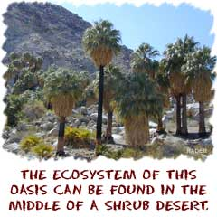
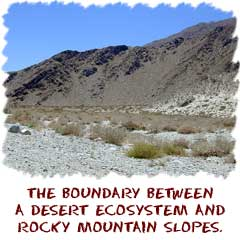
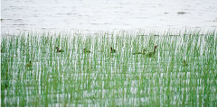

The word ecosystem is short for ecological systems. An ecosystem includes all of the living organisms in a specific area. These systems are the plants and animals interacting with their non-living environments (weather, Earth, Sun, soil, atmosphere). An ecosystem's development depends on the energy that moves in and out of that system. As far as the boundaries of an ecosystem, it depends upon how you use the term. You could have an entire ecosystem underneath a big rock. On the other hand, you could be talking about the overall ecosystem of the entire planet (biosphere).

An ecosystem can be as small as a puddle or as large as the Pacific Ocean. That ecosystem includes every living and non-living thing in the area. It is several small communities interacting with each other. Let's look at a puddle example. You might start by looking at the temperature, depth, turbulence, sunlight, atmospheric pressure, weather patterns, wind, nutrients, etc. Those are just the non-living things in the ecosystem of a puddle. When you add on all the living interactions, you have a good idea how complex an ecosystem can be. Even a puddle is an amazing place.

Two common ecology terms are abiotic and biotic. Biotic factors are the living organisms in an ecosystem such as animals, plants, fungi and bacteria. Abiotic factors are the nonliving components within an ecosystem such as soil, air, water, temperature, light, chemicals and nutrients. Ecologists (scientists who study ecosystems) use the term ecological niche to describe how an organism has evolved to fit into its ecosystem. For example, if an organism interacts with many other organisms in its ecosyst

The coniferous forest is also known as the boreal forest, and in North America this type of ecosystem is referred to as the taiga. Made up mostly of cone-bearing trees known as conifers, coniferous forests are found in mountainous regions in Canada, Alaska, Russia and northern Europe. The plants in coniferous forests have several adaptations that help them survive in areas that often experience long, cold winters and short, cool summers.
Tropical rainforests are ecosystems of rich biodiversity located near the equator, with densely growing plants and trees competing for light, nutrients and water. The rainforests are warm, humid, and wet, with annual rainfalls of 80 to more than 400 inches. They cover only 6 percent of Earth's land surface, yet these rainforests are extremely important. Tropical rainforest plants produce 40 percent of Earth's oxygen. More than half of the world’s known animal species live in the tropical rainforests.
Vegetation is a constant presence in the rain forest. River tributaries running throughout the forest floor also collect water and serve as watering holes for animals. The rain runoff from trees provides a rich source of nutrition for trees and shrubs. Animals obtain nutrition from flowering trees and shrubs that bear seeds and fruits.